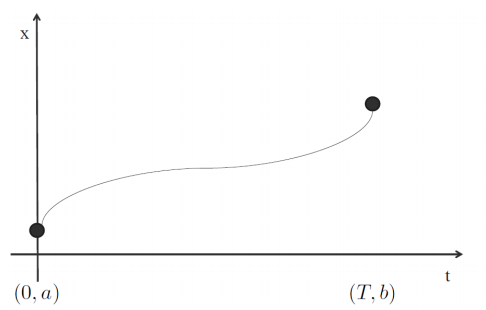
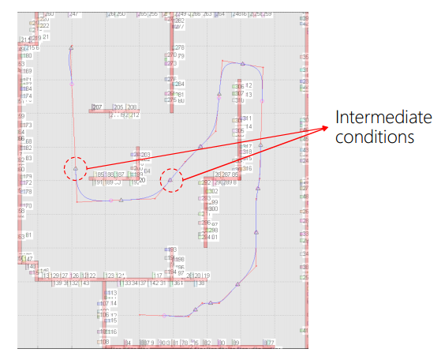
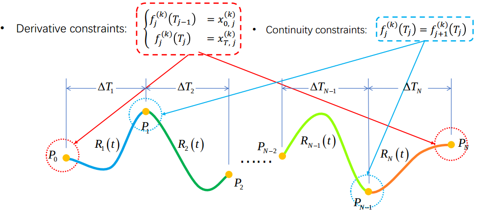

Minimum Snap Trajectory Generation¶
Introduction¶
Why Smooth Trajectory?¶
- Good for autonomous moving
- Velocity/higher-order dynamics can't change immediately
- The robot should not stop at turns
- Save energy

Smooth Trajectory Generation¶
There are ways to generate smooth trajectory:
- Boundary condition: start, goal positions(orientations)
- Intermediate condition: waypoint positions(orientations)
- Waypoints can be found by path planning (A star, RRT star, etc.)
- Smoothness criteria
- Generally translates into minimizing rate of change of "input"
Minimum Snap Optimization¶
Differential Flatness¶
The states and the inputs of a quadrotor can be written as algebraic functions of four carefully selected flat outputs and their derivatives.
- Enables automated generation of trajectories
- Any smooth trajectory in the space of flat outputs (with reasonably bounded derivatives) can be followed by the under-actuated quadrotor.
- A possible choice: \(\sigma = [x, y, z, \psi]^T\)
- Trajectory in the space of flat outputs: \(\sigma(t) = [T_0, T_M] \to \mathbb{R}^3 \times SO(2)\)
Reference:
Polynomial functions can be used to specify trajectories in the space of flat outputs:
- Easy determination of smoothness criterion with polynomial orders.
- Easy and closed form calculation of derivatives.
- Decoupled trajectory generation in three dimensions.
Mimimum Snap¶
Smooth 1D Trajectory¶
It's just a simple BVP(Boundary Value Problem).

We design a trajectory \(x(t)\) follows boundary condition:
As we have known, smoothness means continuous and differential, and polynomial is \(n\) order differential and \(n + 1\) order continuous. So the smoothness is ensured by parametrization, we use a \(5^{th}\) order polynomial trajectory, this is the smoothness criteria:
The boundary condition is:
| Position | Velocity | Acceleration | |
|---|---|---|---|
| t = 0 | a | 0 | 0 |
| t = T | b | 0 | 0 |
It can be solved with:
Smooth Multi-Segment Trajectory¶
If intermediate conditions are given, we get a multi-segment problem. We prefer constant velocity motion at \(v\), and zero acceleration.

The boundary conditions become:
| Position | Velocity | Acceleration | |
|---|---|---|---|
| t = 0 | a | \(v_0\) | 0 |
| t = T | b | \(v_T\) | 0 |
The solution is:
Optimization-based Trajectory Generation¶
If we know the \(v\) and \(a\), we can use multi-segment trajectory generation method to solve the problem. But the critical point is, we have no idea what is the best value for these variables. That's where we use optimization-base method.
Smooth 3D Trajectory¶
Let's take an example of quadrotor trajectory generation. The problem can be described as:
- Boundary condition: start, goal positions(orientations)
- Intermediate condition: waypoint positions(orientations)
- Waypoints can be found by path planning(A star, RRT star, etc)
- Introduced in previous lectures
- Smoothness criterion
- Generally translates into minimizing rate of change of "input"
But what derivatives should we minimize?
As inferenced before, we have following relationships between derivatives and state of quadrotor:
| Derivative | Translation | Rotation | Thrust |
|---|---|---|---|
| 0 | Position | ||
| 1 | Velocity | ||
| 2 | Acceleration | Rotation | |
| 3 | Jerk | Angular Velocity | Thrust |
| 4 | Snap | Angular Acceleration | Differential Thrust |
We got following conclutions:
- Minimum jerk: minimizing angular velocity, which is good for visual tracking;
- Minimum snap: minimizing differential thrust, which saves energy.
So in math language, the problem is:
Attention:
- Each segment is a polynomial
- No need to fix the order, but keeping the same order makes this problem simpler
Time durationsfor each segment must be known
The constraints:

Smoothness means its derivative is continuous!
How to determine the trajectory order? Following iterms are what we should think about:
- which order to ensure the smoothness?
- which order to ensure the continuity?
- which order to minimize control input?
and these three items are not coupled, we can set them seperately.
A general method to define the order of 1D trajectory is:
where \(N\) is the minimum degree of polynomial, \(d\) is the order of difference. For example:
- Minimum jerk: \(N = 2 * 3(jerk) - 1 = 5\)
- MInimum snap: \(N = 2 * 4(snap) - 1 = 7\)
How this works? If we want to solve the minimum jerk problem, the number of equations is \(2 * 3\), because we have start and end point, and each has \(3\) equations(v, a, j), and the 5 order polynomial has \(5 + 1\) unknowns.
And for k-segment trajectory, the constraints number of jerk will be \(3 + 3 + (k - 1) = k + 5\), and the number of unknowns is \((N + 1) * k\), so the relationship between degree of polynomial and k is:
The more segments we divide, the less degrees of polynomial we need. But \(k\) may be \(1\), so \(5\) is a good choice.
As for the timeline of problem, we can use
- many relative timeline, which is good for